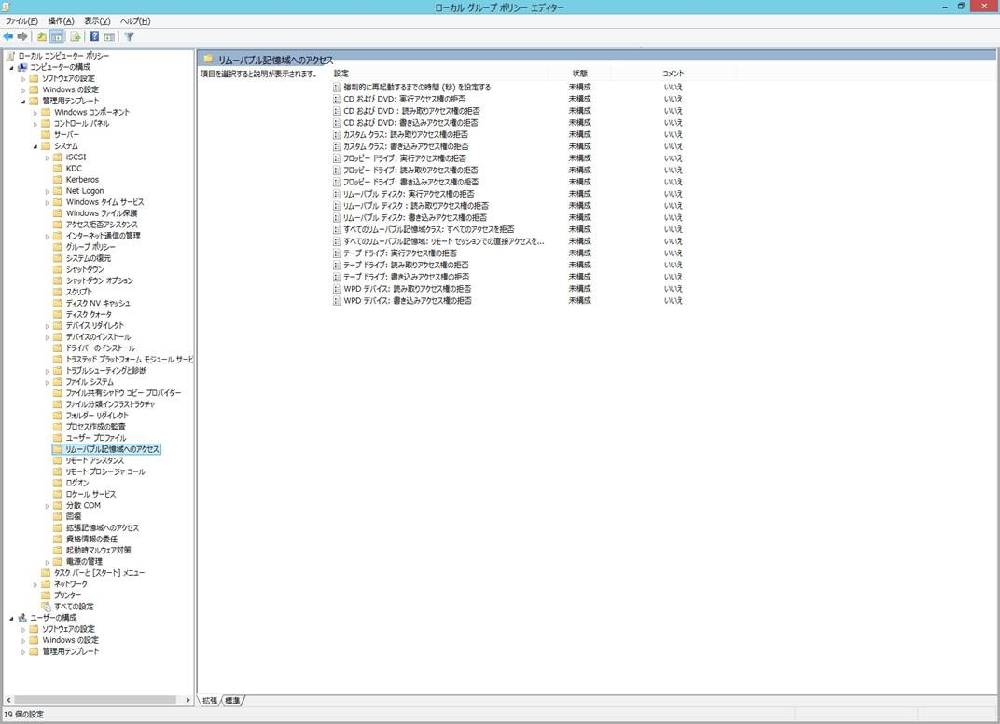
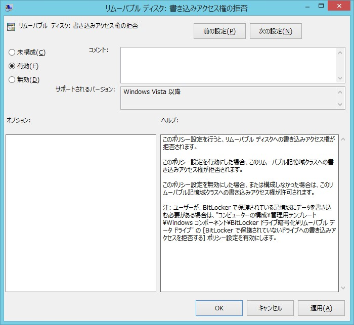

※ 本記事は弊社の Technet から移行した記事です。
こんにちは、Windows サポートチームです。
昨今、情報漏えい対策の一環として多くのお問い合わせをいただいておりますグループ ポリシーを使用してリムーバブル デバイスを制御する方法についてご紹介させていただきます。
グループ ポリシーを使用してリムーバブル デバイスを制御する方法は大きく分けると以下の 2 点の方法がございます。
– グループ ポリシーを使用してリムーバブル デバイスのアクセスを制御する方法
本項ではこちらの方法についてご紹介させていただきます。
– グループ ポリシーを使用してリムーバブル デバイスのインストールを制御する方法
こちらにつきましては以下のページでご紹介させていただいております。
「グループ ポリシーを使用してデバイス インストールを管理する」
URL : https://learn.microsoft.com/ja-jp/windows/client-management/client-tools/manage-device-installation-with-group-policy
併せて、Microsoft Defender for Endpoint(MDE) にてより詳細な制御方法もございますので、以下もご参照いただけますと幸いです。
「Microsoft Defender for Endpoint のデバイス コントロール」
URL : https://learn.microsoft.com/ja-jp/defender-endpoint/device-control-overview
「デバイスコントロール機能を使用してリムーバブルメディアアクセス制御を構成する手順と確認ポイント」
URL : https://jp-sec.github.io/blog/Endpoint-MDAV-2023-12-13/
<本項の概要>
—————————————————————————-
■グループ ポリシーを使用してリムーバブル デバイスのアクセスを制御する方法
- リムーバブル記憶域へのアクセス制御の概要
- 設定方法
■補足情報
- コンピューターの構成とユーザーの構成
—————————————————————————-
■グループ ポリシーを使用してリムーバブル デバイスのアクセスを制御する方法
- リムーバブル記憶域へのアクセス制御の概要
- 設定方法
—————————————————————————————————————
-1. リムーバブル記憶域へのアクセス制御の概要
—————————————————————————————————————
このグループ ポリシーでは、リムーバブル デバイスとして認識されたデバイスに対し、書き込み、読み取り、実行の制御を行うことが出来ます。対象OSは Windows Vista 以降のクライアント OS, サーバーOSです (※1)。
リムーバブル記憶域へのアクセス制限のグループ ポリシーを設定すると、グループ ポリシー サービス (Gpsvc) から通知を受けた Portable Device Enumerator Service (WPDBusEnum) サービスが、制御の対象となるデバイスを特定し、デバイスのアクセス コントロール リスト (ACL) を設定します。
このグループポリシーでは、下記の 5 つに分類されるリムーバブル デバイスについてアクセス制御を行うことが可能です。
またこのあとご紹介させていただく カスタム クラスをご利用いただくことにより、デバイス セットアップ クラス GUID によるデバイスのアクセス制御を行うことも可能です。
| 制御対象 | 代表的なデバイス |
|---|---|
| CD および DVD | CD および DVD |
| フロッピー ドライブ | USB フロッピーを含むフロッピー |
| リムーバブル ディスク | USB メモリ、USB ディスク等 |
| テープ ドライブ | テープ ドライブ |
| WPD デバイス | メディア プレーヤー、デジタルカメラ、SD、MD、携帯電話(スマートフォン)等 |
SD カードは一般的には WPD デバイスとして認識されますが、製造メーカーによってはリムーバブル ディスクとして認識されるものもございます。制御を行いたいデバイスが特定のものである場合は、念のため製造メーカーにご確認いただければ幸いです。
<参考情報>
[タイトル] System-Defined Device Setup Classes Available to Vendors (英語)
http://msdn.microsoft.com/en-us/library/ff553426(VS.85).aspx
※1. [リムーバブル記憶域へのアクセス制御] ポリシーによる制御をサーバー OS に対して実施する場合、 [コンピューターの構成] を使用したポリシーのみ設定する事が可能です。(サーバー OS に対して [ユーザーの構成] を使用して本ポリシーを適用した場合、本ポリシーによる設定は反映されません)。なお、制御対象がクライアント OS の場合には、[コンピューターの構成 / ユーザーの構成] のいずれでも対象デバイスを制御する事が可能です。
—————————————————————————————————————-
2. 設定方法
—————————————————————————————————————-
リムーバブル記憶域へのアクセス制御の設定方法
以下は、グループ ポリシーを用いて、ローカルのコンピュータに対して 『リムーバブル ディスク への書き込み』 を制御する手順についてご紹介します。[スタート]を右クリックします
[ファイル名を指定して実行]を選択し、
gpedit.mscと入力します以下の順に進みます：
- [コンピューターの構成]
- [管理用テンプレート]
- [システム]
- [リムーバブル記憶域へのアクセス]
[リムーバブル ディスク: 書き込みアクセス権の拒否]を選択し、設定値を
有効にします


■補足情報
—————————————————————————————————————-
-1. コンピューターの構成とユーザーの構成
—————————————————————————————————————-
以下のようなシナリオをベースにご紹介させていただきます。
<シナリオ>
——————————————————————-
情報漏えい対策の一環として、コンピュータの構成で [リムーバブル ディスクの読み取りアクセス権の拒否] と [リムーバブル ディスクの書き込みアクセス権の拒否] を有効にしている。
しかし一部のユーザー (User A) は、USB メモリを使用する必要があるため User A に対してのみ [リムーバブル ディスクの読み取りアクセス権の拒否] と [リムーバブル ディスクの書き込みアクセス権の拒否] を無効に設定したい。
想定する設定方法
– コンピュータの構成でポリシーを有効化
– User A に対いてポリシーの無効化
——————————————————————-
上記のような方法で設定を行った場合、結果は User A に対しても [リムーバブル ディスクの読み取りアクセス権の拒否] と [リムーバブル ディスクの書き込みアクセス権の拒否] が有効になってしまします。
これはグループ ポリシーのリムーバブル記憶域へのアクセス制御については、設定項目がユーザーの構成とコンピュータの構成で重複した場合、コンピュータの構成が優先されるためです。
グループ ポリシーのリムーバブル記憶域へのアクセス制御で優先される構成
コンピュータの構成 > ユーザーの構成
従いまして、本シナリオの要件を満たすためには、コンピュータの構成で設定を行うのではなく、ユーザーの構成で全ユーザーに対してアクセス拒否のポリシーの有効を設定いただいた上で、User A に対いてポリシーの無効化を設定いただきますようお願いいたします。
<設定方法例>
新規で作成した AccessEnableOUに User A を追加し、 新規で作成した AccessDenyOU に全ユーザーを追加します。それぞれの OU に対して以下のように GPO をリンクさせます。
GPOをリンクさせるとき、AccessEnableOU , AccessDenyOU の順番で行います。
AccessEnableOU → – [リムーバブル ディスク: 書き込みアクセス権の拒否] 設定値: 無効
– [リムーバブル ディスク: 読み取りアクセス権の拒否] 設定値: 無効
AccessDenyOU → – [リムーバブル ディスク: 書き込みアクセス権の拒否] 設定値: 有効
– [リムーバブル ディスク: 読み取りアクセス権の拒否] 設定値: 有効
なお、グループ ポリシーのリムーバブル記憶域へのアクセス制御を特定のユーザーに設定する場合は、以下の手順で行うことが出来ます。
- [スタート]を右クリックします
- [ファイル名を指定して実行]を選択し、
gpedit.mscと入力します - 以下の順に進みます：
- [ユーザーの構成]
- [管理用テンプレート]
- [システム]
- [リムーバブル記憶域へのアクセス]
- [リムーバブル ディスク: 書き込みアクセス権の拒否]を選択し、設定値を
有効にします
参考:
グループ ポリシーを用いたデバイスのアクセス制御について
いかがでしたでしょうか。
このブログが情報漏えい等の対策としてお役にたてれば幸いです。